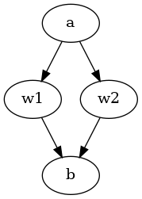

author: niplav, created: 2022-03-04, modified: 2022-07-19, language: english, status: notes, importance: 8, confidence: likely
Representing inconsistent preferences with specific mathematical structures can clarify thoughts about how to make those preferences consistent while only minimally changing them. This is discussed in the case of preferences over world states, represented by directed graphs; and preferences over lotteries of world states, represented either by infinitely dense graphs, (in some cases) vector fields over probability simplices, or edge-weighted directed graphs. I also present an algorithm for the discrete case based on the graph edit distance. Implications for scenarios such as ontological shifts are discussed.
A kind of God-made (or evolution-created) fairness between species is also unexpectedly found.
— Yew-Kwang Ng, “Towards Welfare Biology: Evolutionary Economics of Animal Consciousness and Suffering” p. 1, 1995
Random testing is simple in concept, often easy to implement, has been demonstrated to effectively detect failures, is good at exercising systems in unexpected ways (which may not occur to a human tester), and may be the only practical choice when the source code and the specifications are unavailable or incomplete.
— Tsong Yueh Chen/Fei-Ching Kuo/Robert G. Merkel/T.H. Tse, “Adaptive Random Testing: the ART of Test Case Diversity”, 2010
Consider an agent which displays (von Neumman-Morgenstern) inconsistent preferences, for example choosing two incompatible options in the two scenarios in the Allais paradox, or reliably displaying cycles in its actions (detecting which actions are in fact caused by inconsistent preferences, and not just exotic ones from weird abstractions, is considered a separate problem here). We might want to interact with that agent, e.g. trade with it, help it (or exploit it), or generally know how it will act But how to go about that if the agent displays inconsistent preferences? Perhaps it might even be the case that humans are such agents, and find ourselves in a conundrum: we know our preferences are inconsistent and reliably exploitable, and that agents with such preferences reliably fare worse in the world, we might want to change that.
A possible approach to this problem has two steps:
Define a set of possible (von Neumann-Morgenstern) inconsistent
preferences over a set $W$ of worlds as $\not\curlyvee$, and the set
of consistent preferences over those worlds as $\curlyvee$. Elements
from those sets are written as $\succsim \in \not\curlyvee$ and
$\succeq \in \curlyvee$.
One way we could approach the problem is by trying to turn those
inconsistent preferences consistent, i.e. constructing a function $t:
\not \curlyvee \mapsto \curlyvee$ that takes an inconsistent preference
$\succsim$ and transforms it into a consistent preference $\succeq$,
while retaining as much of the original structure of the preference
as possible (it would make little sense if we replaced the original
preference relation with e.g. indifference over all options).
Formally, we want to find for some given distance
metric
$d: \not \curlyvee \times \curlyvee \mapsto ℝ$ a function
$t$ so that
I call this function a turner, and sometimes call the results of that function the set of turnings (an element from that set is a turning). The names mostly chosen for not having been used yet in mathematics, as far as I know, and because I want to be a little extra.
A solution to the problem of turning inconsistent preferences into consistent ones then has these components:
$\not \curlyvee$ and $\curlyvee$
$ℝ$$t$
$d$
This work is closely related to the investigations in Aird & Shovelain 2020 (so closely that even though I believe I re-invented the approach independently, it might just be that I had read their work & simply forgotten it), and broadly related to the value extrapolation framework outlined in Armstrong 2022.
When we have discrete sets of worlds $W$, we can represent
an inconsistent preference over those worlds by using a directed graph
$G_{\succsim}=(W,E_{\succsim} \subseteq W \times W)$.
The presence of an edge $(w_1, w_2)$ would mean that $w_1 \succsim w_2$,
that is $w_1$ is preferred to $w_2$.
Mathematically, then, $\not \curlyvee$ is the set of all possible
graphs with edges in $W \times W$, that is
$\not \curlyvee=\{(W, E)| E \in \mathcal{P}(W \times W))\}$).
The consistent equivalent to an inconsistent preference
represented by a directed graph would be a path
graph
$G_{\succeq}=(V, E_{\succeq})$ over the same set of
vertices $W$.
The method for transforming $G_{\succsim}$ into $G_{\succeq}$ would be
by adding/deleting the minimal number of vertices from $E_{\succsim}$.
Mathematically, then $\curlyvee$ is the set of transitive closures
of all possible path graphs that are encode permutations of $W$; $\curlyvee=\{(V, E)^+ | E \in σ(W)\}$.
Consider the following directed graph:
Here, $W=\{a,b,c,d,e,f,g\}$.
An edge from $a$ to $b$ means that $a$ is preferred to $b$
(short $a \succsim b$). The absence of an edge between two
options means that those two options are, from the view of the agent,
incomparable.
It violates the two von Neumann-Morgenstern axioms for discrete options:
$d$ and $e$ are incomparable (and we don't merely have indifference between these options)$b → c → e → f → g → b$ loopA possible turned version of these preferences could then be the following graph:

This graph looks quite messy, but it's really just the transitive closure of this graph:

Whether this is the "right" way to turn the previous inconsistent preferences depends on the choice of distance metric we would like to use.
In some sense, we want to change the inconsistent preferences as little as possible; the more we modify them, the more displayed preferences we have to remove or change. Since the presence or absence of preferences is encoded by the presence or absence of edges on the graph, removing edges or adding new edges is equivalent to removing or adding preferences (at the moment, we do not consider adding or removing vertices: we stay firmly inside the agent's ontology/world model).
Luckily, there is a concept in computer science called the graph-edit distance: a measure for the difference between two graphs.
The set of possible editing operations on the graph varies, e.g. Wikipedia lists
- vertex insertion to introduce a single new labeled vertex to a graph.
- vertex deletion to remove a single (often disconnected) vertex from a graph.
- vertex substitution to change the label (or color) of a given vertex.
- edge insertion to introduce a new colored edge between a pair of vertices.
- edge deletion to remove a single edge between a pair of vertices.
- edge substitution to change the label (or color) of a given edge.
—English Wikipedia, “Graph Edit Distance”, 2021
Since we do not have labels on the edges of the graph, and have disallowed the deletion or insertion of vertices, this leaves us with the graph edit distance that uses edge insertion and edge deletion.
We can then write a simple pseudocode algorithm for
$\succeq=f(\succsim)$:
turn(G≿=(W, E≿)):
mindist=∞
for L in perm(W):
L=trans_closure(L)
dist=ged(G≿, R)
if dist<mindist:
R=L
mindist=dist
return R
where perm(W) is the set of
permutations on W,
trans_closure(G) is the transitive closure of a graph G, and ged(G1,
G2) is the graph edit distance from G1 to G2.
Or, mathematically,
Implementing this in Python 3 using the networkx library turns out to be easy:
import math
import networkx as nx
import itertools as it
def turn(graph):
mindist=math.inf
worlds=list(graph.nodes)
for perm in it.permutations(worlds):
perm=list(perm)
pathgraph=nx.DiGraph()
for i in range(0, len(worlds)):
pathgraph.add_node(worlds[i], ind=i)
# The transitive closure over this particular path graph
# Simplify to nx.algorithms
for i in range(0, len(perm)-1):
pathgraph.add_edge(perm[i], perm[i+1])
pathgraph=nx.algorithms.dag.transitive_closure(pathgraph)
# Compute the graph edit distance, disabling node insertion/deletion/substition and edge substitution
edge_cost=lambda x: 1
unaffordable=lambda x: 10e10
same_node=lambda x, y: x['ind']==y['ind']
edge_matches=lambda x, y: True
dist=nx.algorithms.similarity.graph_edit_distance(graph, pathgraph, node_match=same_node, edge_match=edge_matches, node_del_cost=unaffordable, node_ins_cost=unaffordable, edge_ins_cost=edge_cost, edge_del_cost=edge_cost)
if dist<mindist:
result=pathgraph
mindist=dist
return result
We can then test the function, first with a graph with a known best completion, and then with our example from above.
The small example graph (top left) and its possible turnings are (all others):

>>> smallworld=['a', 'b', 'c']
>>> smallgraph=nx.DiGraph()
>>> for i in range(0, len(smallworld)):
... smallgraph.add_node(smallworld[i], ind=i)
>>> smallgraph.add_edges_from([('a', 'b')])
>>> smallre=turn(smallworld, smallgraph)
>>> smallre.nodes
NodeView(('a', 'b', 'c'))
>>> smallre.edges
OutEdgeView([('a', 'b'), ('a', 'c'), ('b', 'c')])
This looks pretty much correct.
>>> mediumworld=['a', 'b', 'c', 'd', 'e', 'f', 'g']
>>> mediumgraph=nx.DiGraph()
>>> for i in range(0, len(mediumworld)):
... mediumgraph.add_node(mediumworld[i], ind=i)
>>> mediumgraph.add_edges_from([('a', 'b'), ('b', 'c'), ('c', 'd'), ('c', 'e'), ('e', 'f'), ('f', 'g'), ('g', 'b')])
>>> mediumres=turn(mediumworld, mediumgraph)
>>> mediumres.nodes
NodeView(('a', 'b', 'c', 'd', 'e', 'f', 'g'))
>>> mediumres.edges
OutEdgeView([('a', 'b'), ('a', 'c'), ('a', 'd'), ('a', 'e'), ('a', 'f'), ('a', 'g'), ('b', 'c'), ('b', 'd'), ('b', 'e'), ('b', 'f'), ('b', 'g'), ('c', 'd'), ('c', 'e'), ('c', 'f'), ('c', 'g'), ('d', 'e'), ('d', 'f'), ('d', 'g'), ('e', 'f'), ('e', 'g'), ('f', 'g')])
This is actually equal to the hypothesized solution from above (below is the non-transitive-closure version):
This solution has some glaring problems.
Some of you might have noticed that this algorithm is somewhat inefficient (by which I mean absolutely infeasible).
Since we iterate through the permutations of $W$, the runtime is
$\mathcal{O}(|W|!)$ (with the added "benefit" of additionally computing
the NP-complete
graph edit distance inside of the loop, which is also
APX-hard to approximate).
Possible better approaches would involve finding the longest subgraph that is a path graph, or the spanning tree, perhaps the transitive reduction is helpful, or maybe the feedback arc set?
Another, smaller problem is that the algorithm often doesn't have a unique result, as seen in the small example above.
We can compute the set of all possible turnings with some trivial changes to the algorithm:
turn_all(G≿=(W, E≿)):
mindist=∞
R=∅
[…]
if dist<mindist:
R={L}
mindist=dist
else if dist==mindist:
R=R∪{L}
return R
and its implementation
def turn_all(graph):
results=set()
[…]
if dist<mindist:
results=set([pathgraph])
mindist=dist
elif dist==mindist:
results.add(pathgraph)
return results
The results, with the small example, are as expected:
>>> turnings=list(turn_all(smallworld, smallgraph))
>>> len(turnings)
3
>>> turnings[0].edges
OutEdgeView([('a', 'b'), ('a', 'c'), ('b', 'c')])
>>> turnings[1].edges
OutEdgeView([('a', 'b'), ('c', 'a'), ('c', 'b')])
>>> turnings[2].edges
OutEdgeView([('a', 'c'), ('a', 'b'), ('c', 'b')])
For the big example, after waiting a while for the solution:
>>> turnings=list(turn_all(mediumworld, mediumgraph))
>>> len(turnings)
49
I will not list them all, but these are less than the $7!=5040$
possible options.
This brings up an interesting question: As we have more and more elaborate inconsistent preferences over more worlds, does it become more likely that they have a unique consistent preference they can be turned to? Or, in other words, if we make the graphs bigger and bigger, can we expect the fraction of inconsistent preferences with a unique turning to grow or shrink (strictly) monotonically? Or will it just oscillate around wildly?
More formally, if we define $\mathcal{G}_n$ as the set of graphs
with $n$ nodes, and $\mathcal{U}_n=\{G \in \mathcal{G}_n | 1=|\text{turn_all}(G)|\}$
as the set of graphs with $n$ nodes that
have unique path graphs associated with them.
We can further define the set of all graphs wwith $n$ nodes
with $m$ turnings as
$\mathcal{T}{n,m}=\{G \in \mathcal{G}_n | m=|\text{turn_all}(G)|\}$
(of which $\mathcal{U}_n=\mathcal{T}_{n, 1}$
is just a special case).
We can call the size of the set of all turnings of a graph the
confusion of that graph/set of inconsistent preferences: If the
graph is already the transitive closure of a path graph, the size of
that set is (arguendo) 1: there are no other possible turnings. If the
graph contains no edges (with $n$ nodes), the confusion is maximal with
$n!$, the preferences carry the minimal amount of meaning.
The minimal number of turnings a graph can have is 1, with a graph-edit distance of 0: any transitive closure of a path graph satisfies this criterion (if your preferences are already consistent, why change them to be more consistent?)
However, those graphs aren't the only graphs with exactly one turning, consider the following graph (left) and a possible turning (right) (with graph-edit distance 1; the changed edge is red, a nice opportunity for some rubrication):

One can easily see that it has exactly one turning, and checking with the code confirms:
>>> counter=nx.DiGraph()
>>> counterworld=['a', 'b', 'c', 'd']
>>> for i in range(0, len(smallworld)):
... smallgraph.add_node(smallworld[i], ind=i)
>>> counter.add_edges_from([('a', 'b'), ('b', 'c'), ('c', 'd'), ('a', 'c'), ('b', 'd'), ('d', 'a')])
>>> counterres=list(turn_all(counter))
>>> len(counterres)
>>> >>> counterres[0].edges
OutEdgeView([('a', 'b'), ('a', 'c'), ('a', 'd'), ('b', 'c'), ('b', 'd'), ('c', 'd')])
For a graph with $n$ nodes the maximal number of turnings it is
upper-bounded by $n!$, and a sufficient condition for the graph to
have that many turnings is when the graph is the union of a set of
complete digraphs with
disjoint nodes. For example the graph with 4 nodes and no edges has 24
possible turnings, as does the graph with 4 nodes and two edges $\{(1,2),
(2,1)\}$.
We can prove this inductively: When considering a node-labeled graph
with $n$ nodes and no edges, the graph edit distance to any path
graph variant of that graph is the same, because we always have to
add $n-1+n-2+n-3 \dots 1=\frac{n-1+(n-1)^2}{2}$ edges to reach
any transitive closure of a path graph (by the sum of any arithmetic
progression).
Let not $G^{\circ}$ be a graph with $n$ nodes that is solely the
union of complete digraphs with disjoint nodes. When we now pick two nodes
$u$ and $v$ from $G^{\circ}$ and add the edges $\{(u,v), (v,u)\}
\cup \{(v, x)|(u,x) \in E^{\circ}\} \cup \{(u, y)|(v,x) \in E^{\circ}\}\}
\cup \{(x, y)|(u,x) \in E^{\circ}, (v,y) \in E^{\circ}\}$ (that is,
we connect $u$ and $v$, and all their neighbors) to $G^{\circ}$,
we have necessarily increased the graph-edit distance to any path graph
by the same amount, we have symmetrically added edge-pairs that need to
be broken in either direction.
One can now pose several (possibly distracting) questions:
turn a graph $G$ or the transitive closure of $G$?$\frac{|\mathcal{U}_n|}{|\mathcal{G}_n|}<\frac{|\mathcal{U}_{n+1}|}{|\mathcal{G}_{n+1}|}$?$\mathcal{G}_n$$\mathcal{U}_n$ develop? What about $\mathcal{T}_{n,2}$, or in general $\mathcal{T}_{n,m}$?
$\lim_{n \rightarrow \infty} \frac{1}{\mathcal{G}_n} \sum_{i=1}^{n} \mathcal{T}_{n,i}$?We can check these empirically! While it would be nice to prove anything
about them, it's much nicer to investigate them computationally. This is
pretty straightforward: For increasing $n$, generate $\mathcal{G}_n$,
for every $G \in \mathcal{G}_n$, compute $|\text{turn_all}(G)|$, save
the data in a file somewhere, and do interesting things with that data.
In code, we first generate all directed graphs with $n$ nodes with a
recursive function
def all_directed_graphs(n):
if n<=0:
return [nx.DiGraph()]
graphs=all_directed_graphs(n-1)
newgraphs=[]
for g in graphs:
g.add_node(n, ind=n)
for tosubset in powerset(range(1, n+1)):
for fromsubset in powerset(range(1, n)):
gnew=g.copy()
for element in tosubset:
gnew.add_edge(n, element)
for element in fromsubset:
gnew.add_edge(element, n)
newgraphs.append(gnew)
return newgraphs
and start turning:
max=16
for i in range(0,max):
graphs=turn.all_directed_graphs(i)
for g in graphs:
print('{0},{1},"{2}"'.format(i, len(turn.turn_all(g)), g.edges))
However, my computer quickly freezes and I find out that this is a lot of graphs:
>>> [len(list(all_directed_graphs(i))) for i in range(0,5)]
[1, 2, 16, 512, 65536]
So the number directed graphs with 5 nodes would be
$2^{32}=4294967296$, far too many for my puny laptop. But
instead of generating them all, one can just generate a
random sample and test on that, using the Erdős–Rényi
model,
for which networkx has the helpful function
generators.random_graphs.gnp_random_graph (Wikipedia informs us that
"In particular, the case $p=\frac{1}{2}$ corresponds to the case
where all $2^{\binom {n}{2}}$ graphs on $n$ vertices are chosen
with equal probability."). We have to randomly add reflexive edges (not
included in the model, it seems) with probability $\frac{1}{2}$ each,
and labels for the nodes, and then we're good to go:
samples=256
for i in range(5,lim):
for j in range(0,samples):
g=nx.generators.random_graphs.gnp_random_graph(i, 0.5, directed=True)
for n in g.nodes:
g.add_node(n, ind=n)
if random.random()>=0.5:
g.add_edge(n,n)
print('{0},{1},"{2}"'.format(i, len(turn.turn_all(g)), g.edges))
We now run the script in the background, happily collecting data for us
(python3 collect.py >../../data/turnings.csv &), and after a nice
round of editing this text go back and try to make sense of the data,
which runs squarely counter my expectations:
>>> import pandas as pd
>>> df=pd.read_csv('data/turnings.csv')
>>> df.groupby(['0']).mean()
1
0
1 1.000000
2 1.875000
3 3.941406
4 9.390289
5 20.554422
6 47.389381
It seems like the mean number of turnings actually increases with the graph size! Surprising. I'm also interested in the exact numbers: Why exactly 9.390289… for the graphs with 4 nodes? What is so special about that number‽ (Except it being the longitude of the Cathedral Church of Christ in Lagos).
Looking at unique turnings turns (hehe) up further questions:
>>> def uniqueratio(g):
... return len(g.loc[g['1']==1])/len(g)
...
>>> df.groupby(['0']).apply(uniqueratio)
0
1 1.000000
2 0.125000
3 0.089844
4 0.055542
5 0.050781
6 0.016393
dtype: float64
>>> def uniques(g):
... return len(g.loc[g['1']==1])
>>> df.groupby(['0']).apply(uniques)
0
1 2
2 2
3 46
4 3640
Very much to my surprise, searching for "2,2,46,3640" in the OEIS yields no results, even though the sequence really looks like something that would already exist! (I think it has a specifically graph-theoretic "feel" to it). But apparently not so, I will submit it soon.
I omit the number of unique turnings for 5 and 6, for obvious reasons (I also believe that the ratio for 6 is an outlier and should not be counted). The number of unique resolutions for the graph with 1 node makes sense, though: Removing the reflexive edge should count as one edge action, but the graph only has one unique resolution:
>>> df.loc[df['0']==1]
0 1 []
0 1 1 []
1 1 1 [(1, 1)]
After this concrete example of how to turn inconsistent preferences into consistent ones, I now try to extract general principles for representing inconsistent preferences, mainly because while the problem has been solved for discrete cases (or so at I believe), it is still open for preferences over lotteries.
It is important to distinguish the inconsistent preferences $\not P$
and the mathematical structure that is used to represent them, here
$\not\curlyvee$, since we might use different ways of representing
$\not P$ (in the discrete case, we could try to use choice
functions,
set-theoretical
relations, utility
functions or directed
graphs etc.).
Assuming that we have a set of axioms $\mathbf{A}$ that describe which
preferences are consistent and which are inconsistent, for the purposes
of this text, we want to ideally find a set of mathematical structures
$\not \curlyvee$ that can represent inconsistent preferences $\not P$:
$\mathbf{a} \subseteq \mathcal{P}(\mathbf{A})$ of the axioms, $\not\curlyvee$ can represent a preference $\not p \in \not P$ that violates all axioms in $\mathbf{a}$.$\not P' \subseteq \not P$ so that for each element $\not p' \in \not P'$ there exists a non-empty subset of elements of $\not \curlyvee$ that represents $\not p'$.
$\not p'$ of that subset $\not P'$, there exists a unique element of $\not \curlyvee$ that represents $\not p'$$\not p \in \not P$ there exists at least one element of $\not \curlyvee$ that represents $\not p$.$\not P$ and $\not \curlyvee$.$\curlyvee \subset \not \curlyvee$ so that $\curlyvee$ can represent only consistent preferences.In the discrete case, the two relevant von Neumman-Morgenstern axioms are completeness and transitivity, which use as a basic structure set-theoretical relations. Furthermore, set-theoretical relations can also represent the violation of both transitivity and completeness.
For purposes of visualization and for the use of some graph-theoretic constructs, I chose to represent those relations as directed labeled graphs, but since binary relations and directed labeled graphs have a bijection between them, this shouldn't be an issue.
Incompleteness
(or incomparability)
between two options $w_1, w_2$ can be represented by not specifying
an edge between the two options, that is $(w_1, w_2) \not \in E, (w_2,
w_1) \not \in E$.
w1>b, a>w2>b, with w1 and w2 incomparable." title="Four variables, with relation a>w1>b, a>w2>b, with w1 and w2 incomparable." />
Strictly speaking,
intransitivity
is already satisfied if there is a triple of worlds $w_1, w_2, w_2$
so that $(w_1, w_2) \in E, (w_2, w_3) \in E$ but $(w_1, w_3) \not \in
E$ (which is another form of incomparability). So having a cycle in the
graph doesn't necessarily entail intransitivity, unless we also demand
antisymmetry:
I assume that antisymmetry is necessary for the consistent version of the preferences, no two options can be considered equally valuable, mainly for the purposes of simplicity (I do not think that this changes much).
I believe that using graphs/set theoretic relations is sufficient to be able to represent all von Neumann-Morgenstern inconsistent preferences.
However, in the formalism of choice sets/choice functions (Gaertner 2009 p. 7-9) I believe that there are some cases which can't be represented by this formalism (because they violate expansion consistency:
With option set $O_1=\{a,b\}$ have $C(O_1)=\{a\}$, but with option
set $O_2=\{a,b,c\}$ we have the choice $C(O_2)=b$.
However, my mathematical knowledge here isn't very deep, so I'd be happy about comments.
(Is this true? Can't we have that generate the relation $a>b, b>a, b>c$?
Maybe we'd need the choice for every subset…)
Von Neumann-Morgenstern utility theory takes as a starting point the
concept of a lottery: a discrete distribution of probability on a set
of worlds $W$ (the probabilities, naturally, sum to 1). (If we have
three worlds, e.g. $W=\{\text{apple}, \text{banana}, \text{clementine}\}$,
an example for a lottery would be
$[0.3: \text{apple}, 0.65: \text{banana}, 0.05: \text{clementine}]$).
The consistent case for preferences over lotteries concerns itself with relations over those lotteries, and has four axioms, two of which (completeness and transitivity) have already been discussed above.
However, finding a neat mathematical structure that can represent violations of all four axioms turns out to be finicky.
The continuity axiom demands that for three lotteries $L, M, N$,
if $L \preceq M \preceq N$, then there exists a probability
$p \in [0,1]$ so that $p \cdot L+(1-p) \cdot N \sim M$.
That is, shifting probabilities can move us toward indifference among options: there are some probabilites for which we will accept high risks or abandon possible high rewards.
Vector field over the probability simplex over the options (representing local preferences over lotteries).
Curl in the vector field?a
Can only exist with incompleteness?
Find mapping from vector field to another that makes the vector field consistent by minimizing the amount of turning/shrinking the vectors have to perform.
?
Look into extremal graph theory.
This leads to an interesting ethical consideration: is it a larger change to a preference relation to add new information or remove information?
It is discussed how to incorporate those weights into an algorithm for
minimally transforming $G_{\succsim}$ into $G_{\succeq}$.
I've seen six cities fall for this
mathematics with incompetence
red flags stand among the trees
repugnant symphonies
a billionaires tarantula just ate the ceiling
thinking it was yet another floor
—Patricia Taxxon, “Hellbulb” from “Gelb”, 2020
Learn human values, check if known inconsistencies are encoded (to ensure learning at the correct level of abstraction), then make consistent.
Furthermore, there remain difficult philosophical problems. We have made a distinction between the agent’s uncertainty about which model is correct and the agent’s uncertainty about which state the world is in within the model. We may wish to eliminate this distinction; we could specify a single model, but only give utilities for some states of the model. We would then like the agent to generalize this utility function to the entire state space of the model.
—Peter de Blanc, “Ontological Crises in Artificial Agents’ Value Systems”, 2010
If you know a mapping between objects from human to AI ontology, you could find the mapping from the (consistent) human probability simplex to the AI simplex?
A node splits in two or more, or two or more nodes get merged, one adds nodes, or removes them. If the then resulting graph isn't a path graph, it can be turned with the method described above.
$G$ have a unique graph $G'$ so that $G$ is the transitive closure of $G'$?Thanks to Miranda Dixon-Luinenburg for finding some typos.